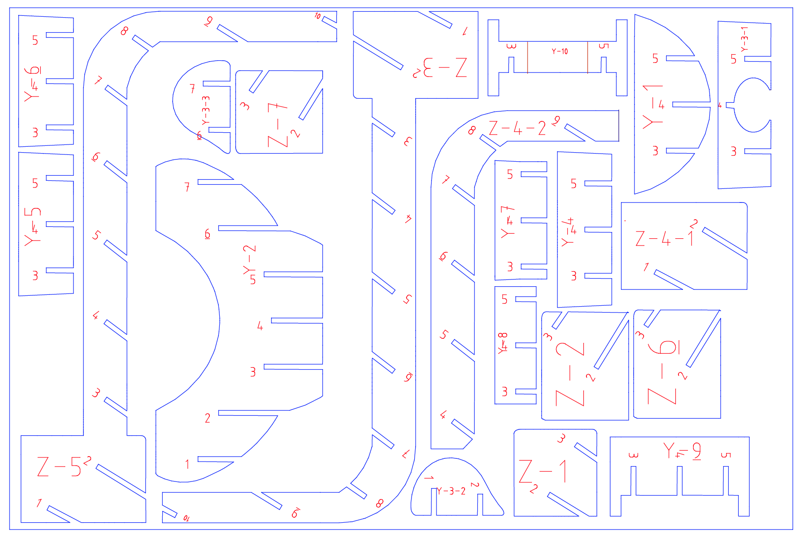
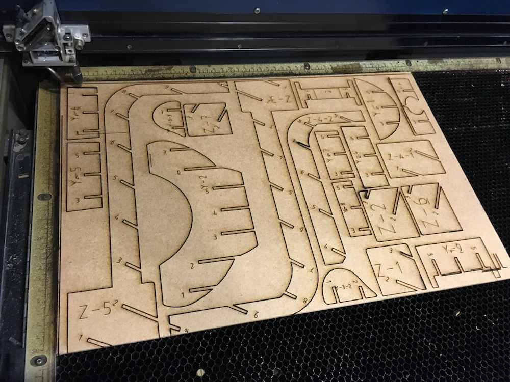
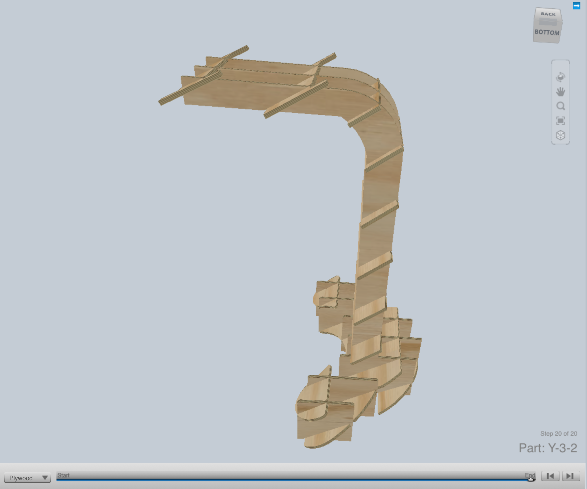
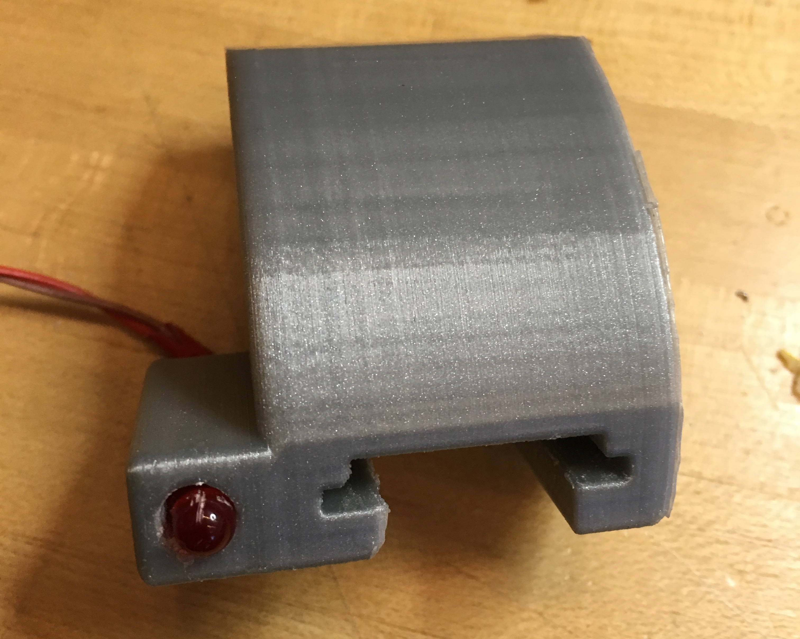
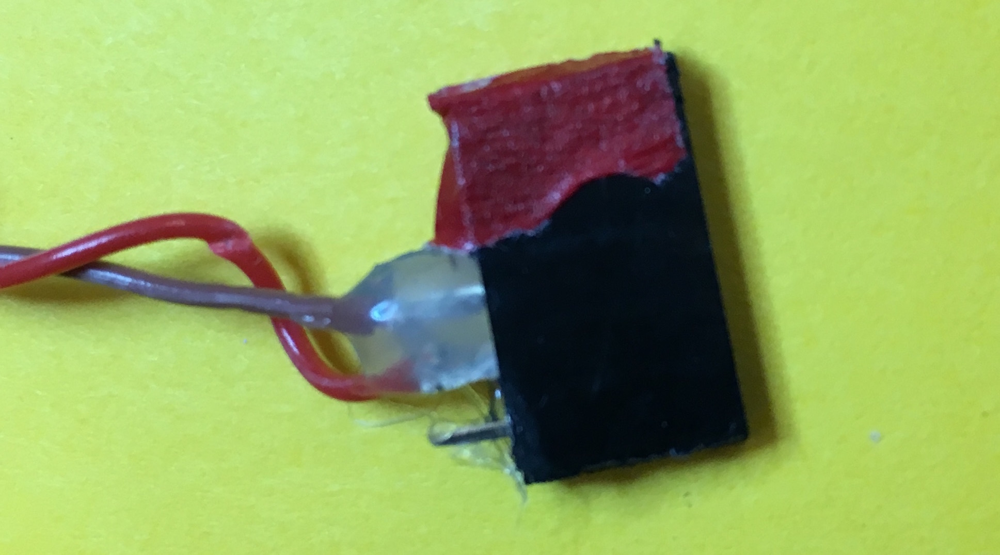
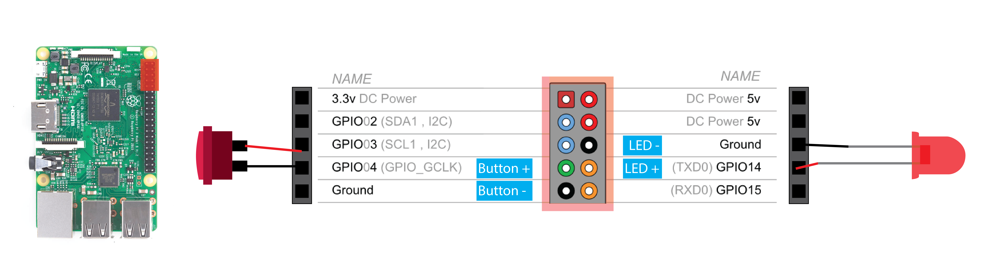
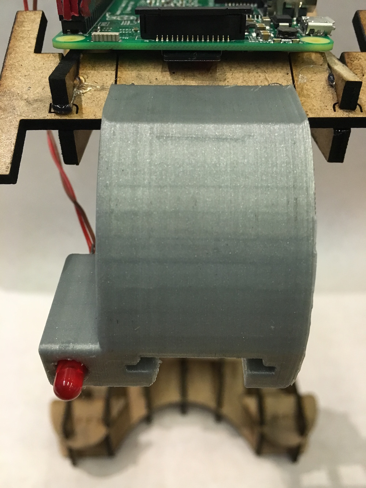
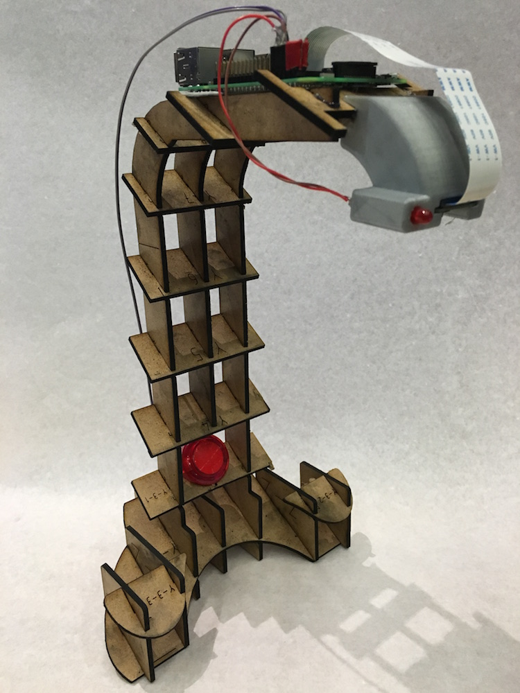

Fabricate Pix
We'll begin by fabricating the Pix stand. The instructions below will guide you through the following steps:

The Pix stand (GIF made with Spin)
Note:
If you would like to order the laser cut parts instead, you can find the parts on Ponoko (http://www.ponoko.com/design-your-own/products/pix-15x15-13660). It costs $45.33 ($5 for material costs and $40.33 for fabrication costs). On the Ponoko project page, click Add to Personal Factory and select Wood > MDF as the material (at size 15.118"x15.118").
If you would like to order the 3D printed part, you can order it from Shapeways, which costs $17.11. (Download the STL and upload to Shapeways to purchase).
1. Laser cutting the stand
The Pix laser cut parts are designed to fit a 12"x18" sheet of 1/8"-thick MDF (You can also pick another material, but the thickness is important). The design is a slightly modified version of the output from 123D Make.
12x18 laser-cut design file [ dxf ]
The red labels should be vector etched, while the blue outlines should be vector cut.
Laser cutting took about ~30 minutes to cut on a Universal Laser Cutter
While I've slightly modified the output from 123D Make, you can still follow the assembly instructions to put the laser-cut pieces together. To do so, download the (free) 123D Make software and open up this 123D Make file. On the left toolbar, click Assembly Steps, where you can view the assembly instructions step-by-step:
View the assembly instructions by openings this 123D Make file
Now that you've assembled the stand, let's move onto 3D printing the camera holder!
2. 3D printing the camera holder
The camera holder press-fits onto the end of the stand and has an opening for an indicator LED. Download the STL file below and print it on your 3D printer of choice. Be sure to 3D print internal supports!

Camera holder [ STL ]. This part took 3 hours to print on an Ultimaker2.
3. Wiring the electronics
You'll want to get out your soldering iron, wire, wirestrippers, and solder at this point!.You'll also want to get your LED, arcade button, and female headers ready. Hot glue is option but highly recommended (tape works too).
First, we'll solder two leads to the LED. You'll need two wires, preferrably in two different colors, that are 6" in length. Solder the cables to the LED and use tape to make sure the LED leads don't touch one another. Then, insert the LED into the 3D printed camera holder.
Now, cut a 5-pin row of female headers and solder the negative end of the LED to the 3rd pin and the positive end to the 4th pin. Use tape or hot glue to insulate the wires. I like to add tape to the "front" of the female header so you know which side faces the edge of the Pi:
The negative end of the LED should be soldered to the 3rd pin of the female header, and the positive end should be soldered to the 4th pin.
Next, we'll wire the button. First, cut two wires 16" in length, ideally in two different colors, and wire the ground cable to the "A" side of the button and the other color to the "J" side of the button:

The ground cable should be soldered to the "A" side, and the other wire should be soldered to the "J" side.
Cut another 5-pin row of female headers and solder the ground wire to the 5th pin and the other wire to the 4th pin. Again, I added red tape again to know which side is the "front."
At this point, you can install the button into the laser-cut assembly:

With the Raspberry Pi resting on the top of the laser-cut assembly, you can now add the female headers, with the button header on the left side and the LED header on the right side as shown in the schematic:
This is an overall schematic for wiring the button and LED to the Raspberry Pi.
(Raspberry Pi GPIO Schematic from http://element14.com).
Finally, press-fit the 3D printed camera holder onto the laser-cut stand, with the camera holder centered (use the etched lines on piece Y-10 as reference). Don't hestiate to use a bit of hot glue here if you want it to be super secure.
Then install the Raspberry Pi Camera module into the 3D printed camera holder with the ribbon cable facing towards the indicator LED. The ribbon cable can be installed on the Pi by first pulling up on the cable holder and then inserting the blue side of the cable towards the audio jack:

(Image from http://raspberrypi.org)
Your entire assembly should now look like this:
Now onto setting up the Raspberry Pi!
Setup Raspberry Pi